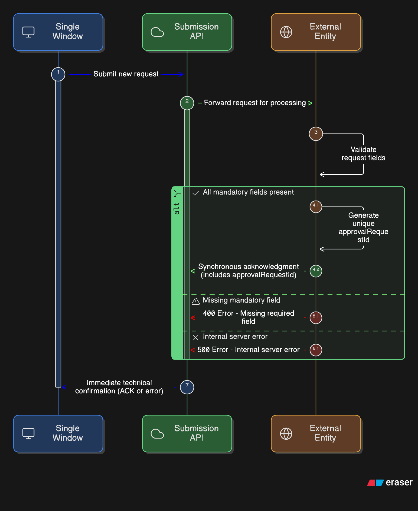
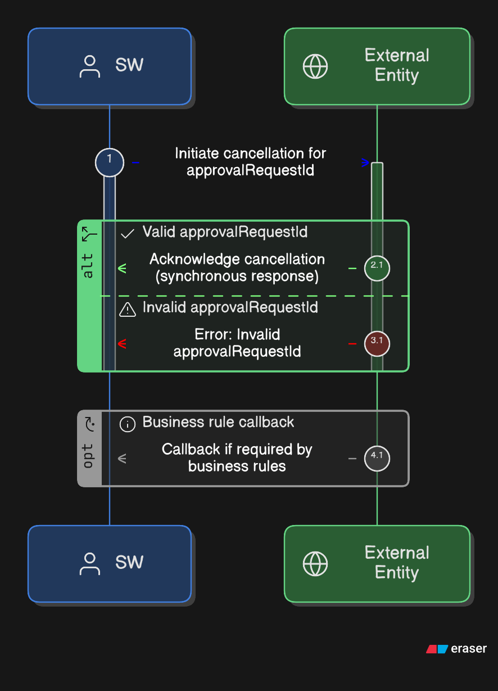

Architecture Overview
The integration follows a service-oriented architecture where:
- External entities expose REST APIs
- SW Platform consumes these APIs using standardized payloads
- All services follow a unified payload envelope
- Authentication via JWT or Basic Auth
- Async callbacks for approval decisions
Request Flow Diagrams
Submission Flow

Cancellation Flow

Responsibilities
External Entity Responsibilities
- Expose 5 REST API endpoints
- Implement authentication (JWT or Basic Auth)
- Process requests and return responses within SLA
- Send callback with approval decisions
- Maintain endpoint availability
SW Platform Responsibilities
- Provide callback endpoint for decisions
- Send requests in standardized format
- Handle responses and errors
- Provide OpenAPI specifications
- Maintain documentation